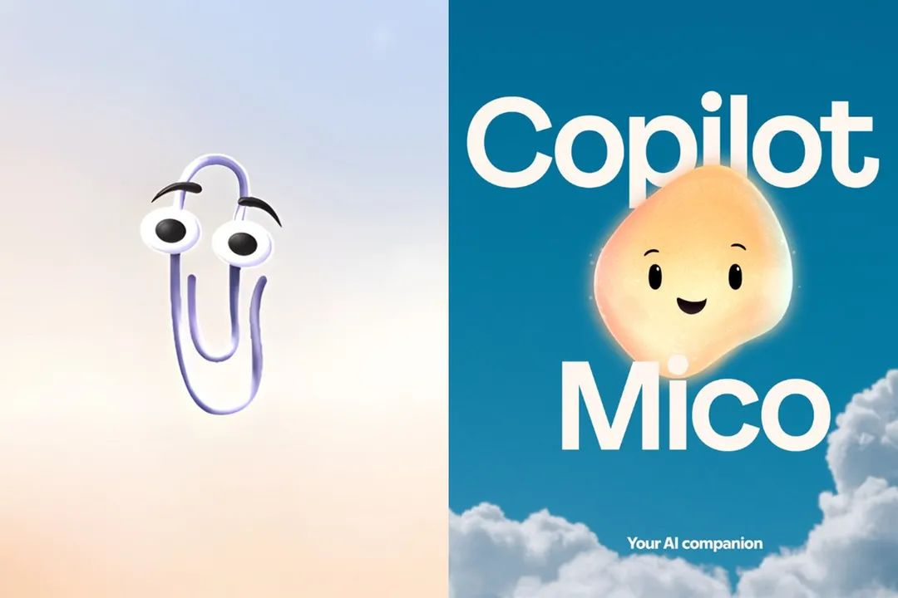

״מי מתעסק? זה מיקו!״
פורסם במקור ב LinkedIn
״מי מתעסק? זה מיקו!״
מיקרוסופט הפכה את העוזר הקולי שלה ל״מיקו״ - כדור זוהר עם מצבי רוח וחוש הומור, חי עכשיו בתוך Copilot.
הוא משנה צבעים לפי הטון והרגש, ואם מקישים עליו מספיק פעמים הוא הופך לקליפי לרגע של נוסטלגיה וכאוס.
הוא מגיע עם זכרון אישי, המשכיות בשיחות, קבוצות בריינסטורמינג, תשובות בנושאי בריאות מתוך נתוני Harvard Health, מצב ״עזרה בלימודים״, ועוד.
מיקרוסופט רודפת אחרי משהו עמוק יותר מפרודוקטיביות - היא רוצה ש Copilot ירגיש כמו חבר, ולא רק כמו עוזר טכני
מיקו הוא ההוכחה הזוהרת והמחייכת לשאיפה הזו, מן סמל לעידן שבו צ׳טבוטים מתחילים להתנהג כמו שותפים לחיים.
וזה לא רק היא, יש לא מעט חברות AI שדוחפות כיום לכיוון של יחסים אישיים יותר עם בוטים (Grok עם אווטרים, Perplexity עם מלווים; אלטמן רומז לתוכן בוגר ב-ChatGPT)
האם זה יהיה יותר נעים או יותר מטריד, זאת שאלה של התאמה בין רמת המעורבות לרמה שנרצה שיתערבו לנו, וכמה נוח לנו שהתוכנה שלך רואה אותנו.
על השאלה הזאת כבר ניסו לענות:
סקר Pew מצא שחצי מהאמריקאים יותר מודאגים מנלהבים מהתרחבות ה-AI, ורבים רוצים שיתרחק מענייני זוגיות ודת.
איך אתם מרגישים עם זה? מעניין לשמוע דעות נוספות בנושא
״אל תיקח ללב מיקו, אל תיקח!״
